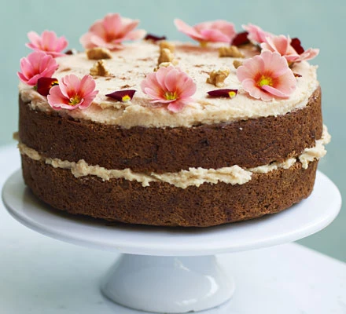

Carrot Cake

Description
Give free-from baking a go with this easy vegan sandwich cake – an indulgent carrot cake with coconut and cashew icing that everyone will want another slice of.
Preparation time: 35 mins
Cooking time: 30 mins
Serves: 12
Ingredients
For the icing
- 4 sachets (200g) creamed coconut
- 1 tbsp lemon juice
- 2 tbsp cashew nut butter
- 50g icing sugar
- 60ml oat milk
For the cake
- 250ml jar coconut oil, melted
- 300g light brown sugar
- 1½ tsp vanilla essence
- 210ml dairy free milk, we used oat milk
- 420g plain flour
- 1½ tsp baking powder
- 1½ tsp bicarbonate of soda
- 1 tsp cinnamon, plus extra cinnamon to decorate
- 1 tsp ginger
- 1 tsp ground nutmeg
- 1 orange, zest only
- 4 medium carrots, grated (you want 270g grated weight)
- 75g chopped walnuts, plus extra to decorate
- edible flowers (optional)
Steps
- Start by making the icing first. Mash the coconut cream with 2 tbsp hot water and the lemon juice until smooth. Add the cashew butter then whisk in the icing sugar followed by the oat milk. Continue to whisk until fully combined, set aside in the fridge until needed.
- Heat the oven to 180C/160C fan/gas mark 4. Grease 2 x 20cm cake tins with a little of the melted coconut oil and line the bases with baking parchment. Whisk together the oil and sugar, then add the vanilla and milk. Combine the flour, baking powder, bicarbonate of soda, spices and orange zest in a separate bowl. Add these to the wet mixture and stir well. Finally stir in the carrot and the nuts. Divide the mixture between the prepared tins and bake for 25-30 mins until a skewer inserted into the middle of the cake comes out cleanly. Cool in the tin for 5 mins before transferring to a wire rack to cool completely.
- Sandwich the cakes together with half the icing then cover the top with the remaining icing (add a splash of oat milk if the icing feels too firm). Scatter over the nuts and dust the cake with a little cinnamon and decorate with edible flowers.